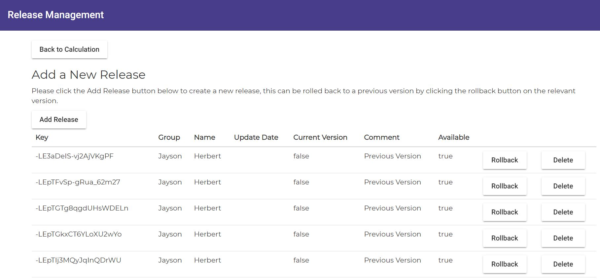

<mat-tab-group>
  <mat-tab label="Overview">
    <h3>
      Overview
    </h3>
    <p>
      Once you are happy with the calculation you have built and you want other users to be able to access and use this
      then the release management section of the system handles the release of the configuration to a usable
      environment for other users to access.
      This is setup so that if you are making changes to the configuration then the calculation can still be used in
      it's previous state whilst updates are being made. The release management system allows the user to also roll
      back any releases where the calculation has been broken as part of the release and allows this to go back to the
      previous version.
      The current version of the release will be the version that other users will use, the system determines this when
      routing to the calculation.
    </p>
    <br />
    
    <br />
    <mat-divider></mat-divider>
    <h3>Releasing Calculation</h3>
    <p>
      Before releasing the calculation it is advised that you test the calculation before releasing to other users.
      To create a released calculation please click the Add Release button on the table, this will then create a new
      release on the bottom of the table will set the current version and set a comment of new.
    </p>
    <mat-divider></mat-divider>
    <h3>Rollback Calculation</h3>
    <p>
      In the event that you have released a calculation and it has broken the calculation you can roll the version back
      to a previous version that worked by locating the row that you want to revert back and select the rollback
      button.
    </p>
    <mat-divider></mat-divider>
    <h3>Delete Released Calculation</h3>
    <p>
      To delete a released calculation find the version of the calculation that requires deletion and click the delete
      button. This is useful for housekeeping old calculations that will never be required any more. The system will
      set the column Available to equal false on the relevant calculation.
    </p>
  </mat-tab>
</mat-tab-group>
